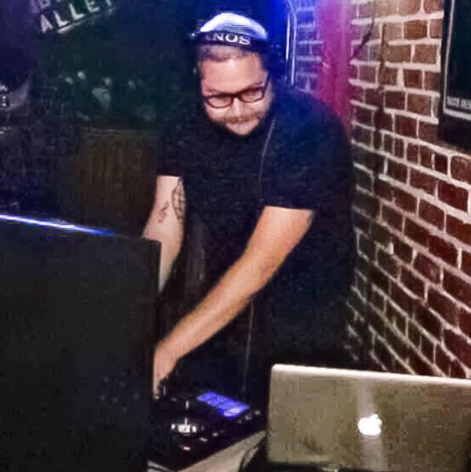
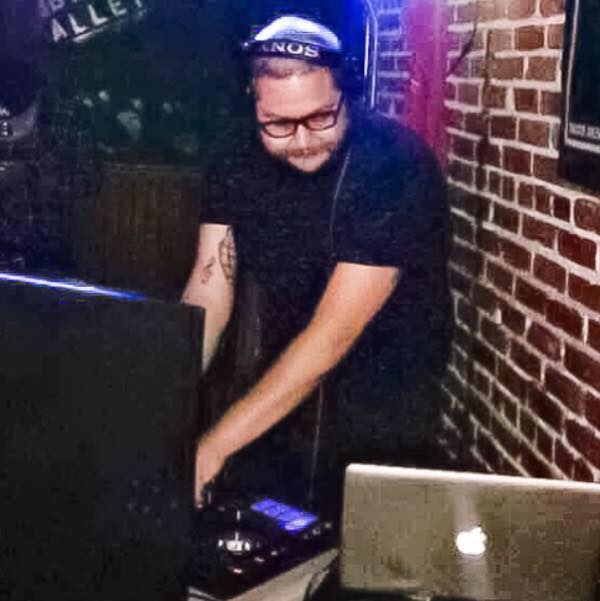

Mario has been studying music since he was a child. He started playing guitar in 1994 and played in various bands during HS and early 00s. He went to his first rave in 1999, and quickly saved up to buy his first set of turntables. dj Militant started DJing (hardcore techno) professionally in Los Angeles, and all over Southern California in 2000. He had a break from electronic music from 2006 to 2014, where he played in a band with a long time music collaborator. He started DJing again in 2014, and focuses more on Trap, Dubstep and House music. He is currently an active DJ.
 
